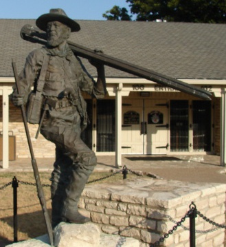

Call Us Today!
(817) 373-3338
info@buffalocreeksurveyor.com

George B. Erath (1813-1891) Born - Jan. 1, 1813, A Charter member and Secretary of Bosque Lodge #92, 1852 through 1855. Bosque Lodge is now known as Waco Lodge No. 92. He was suspended NPD on August 1, 1889, but reinstated in December of that year. Erath was an Indian fighter, soldier, surveyor and Major in the battle of San Jacinto. Erath County, Texas is named for him. He died May 13, 1891
Serving Johnson and surrounding Counties Since 2002
Joe Davis Ballard, RPLS No. 5614, began his career in the land surveying profession after graduating from TSTI Waco with an Associate of Applied Science degree in Civil Engineering/Surveying Technology. After graduating in 1988, Mr. Ballard moved to the area and began his surveying career working for various surveying companies. In December of 2002, Mr. Ballard obtained his Texas Registration.

At Buffalo Creek Surveyor, LLC, Firm No. 10116000, Joe Davis Ballard, RPLS No. 5614 has been serving Johnson County and surrounding areas for about 30 years. The last 17 years, Joe has been a Registered Professional Land Surveyor in the great State of Texas.
Joe is a hands on surveyor in the field and office, so you know you are getting the best we can do!
The many years Joe worked on the ground, from his first position as rodman, working and acquiring knowledge, to obtaining his RPLS, has allowed us to gain the knowledge and skills to efficiently take care of your surveying needs.
We are dedicated to quality and excellence. Call us today for any surveying need!
We can survey anywhere in the State of Texas, but mainly operate in Johnson, Hill, Ellis, Bosque, Somervell, Hood and Parker Counties.
Our motto is:
"We believe in Honesty and Integrity and will strive to meet all of your surveying needs."
We are dedicated to quality and excellence. Call us today for any surveying need!